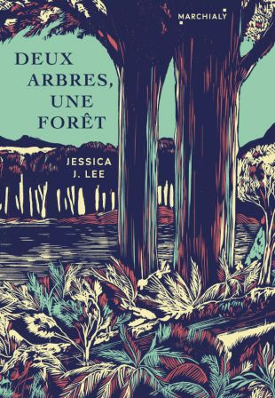

J'écris ce laïus depuis un bureau champêtre, une bulle ouatée bocagère baignée de lumière (certains jours, du moins) donnant sur le jardin pédagogique et nourricier de mon compagnon et sur ses rangées de plantations. En arrière-plan, une silhouette lunaire et somnolente m'épie : celle du point culminant de Loire-Atlantique, le fameux terril d'Abbaretz, me toisant avec arrogance du haut de ses... 70 mètres !
Nous sommes donc loin des contrées vertigineuses et spectaculaires décrites avec une délicate maestria par l'autrice canadienne d'origine taïwano-britannique Jessica J. Lee dans son enquête intime et contemplative Deux arbres, une forêt : l'île de Taïwan, recelant d’innombrables espèces endémiques et 268 sommets de plus de 3000 m d'altitude. Et pourtant, en dépit des apparences, quelques étonnantes similitudes existent entre nos deux univers, échos qui me grisent et m'aident à me projeter dans le décor à la fois âpre et foisonnant que Jessica J. Lee arpente, seule ou accompagnée, sur les traces de Gong, son défunt grand-père, après la découverte posthume d'une missive bouleversante écrite de sa main révélant la face cachée de la lignée paternelle.
Le premier élément de résonance, c'est la luxuriance du paysage (toutes proportions gardées) qui s'offre à moi depuis mon antre rural, et la présence de certains spécimens végétaux qui n'auraient pas l'air si incongru sur les flancs des montagnes de Qixing ou Alishan, comme les théiers (camellia sinensis) que mon cher et tendre cultive avec audace et passion, ici, dans le pays nantais, berceau du camélia en France. Cernés, entre autres, d'arbres fruitiers et de chênes centenaires, les petits théiers doivent se sentir bien entourés. La traductrice aussi : cela m'inspire de côtoyer au quotidien des arbres et une forêt, créatures-totems du récit de Jessica J. Lee.
« Arbre » et « forêt » sont d’ailleurs les mots-titres de l’ouvrage. Deux arbres, une forêt (Two Trees Make a Forest) : une formule aux airs de dicton, qui fait ici référence à la ramification de deux êtres en une famille, en un réseau d’individus interconnectés, mais aussi un jeu de mots à partir de l’idéogramme chinois pour « forêt » : 林 (lin), composé de deux caractères 木 (mu), « arbre ».
Le récit de Jessica J. Lee est truffé d’explications/décorticages du même ordre, témoignant d’un rapport viscéral, organique, à la langue ; autre affinité intellectuelle entre autrice et traductrice. Son amour du verbe est tel qu’à plusieurs reprises, Jessica J. Lee personnifie les mots. Ainsi, lors de sa découverte des caractères chinois noircissant les pages que couvre la missive-fleuve de son grand-père, l’autrice nous dit : « I had to squint to read them, one at a time, stranded in a crowd I didn’t recognize. » (p. 45) « Il me fallait plisser les yeux pour les déchiffrer, un par un, échouée au milieu d’une foule de visages inconnus ». Sous sa plume, les mots revêtent une dimension physique, ils prennent corps et sont même parfois magnifiés en des espaces géographiques où la narratrice évolue au gré de son enquête : « I had the letter translated, and then read it line by line,comparing the characters he’d written to the words typed up into English. A work of excavation, of unearthing meaning and context from the lines, my reading stretched out over many days … I searched his words for the substrata of a changed land » (p. 46) . (« Je fis traduire la lettre, puis je la lus ligne par ligne, comparant les caractères chinois écrits de sa main aux mots dactylographiés en anglais. Véritable travail de fouille, d’exhumation du sens et du contexte enfouis entre les lignes, ma lecture s’étala sur de nombreux jours. … Je sondai ses mots en quête d'une couche sous-jacente : celle d'un pays altéré. » )
Autre aspect du rapport de Jessica J. Lee à la langue qui m’inspire beaucoup, c’est la croyance que nous semblons partager en le pouvoir transformateur, voire performatif, de cette matière vivante que sont les mots. À la vue du terme 哥 哥 (gege), signifiant « frère aîné » en chinois, Jessica J. Lee comprend que son grand-père avait une petite sœur dont jamais il n’avait parlé ni à sa fille, ni à sa petite-fille ; s’ouvre alors un abîme de possibilités pour l’autrice. Elle rappelle alors en ces termes l’immense puissance du mot (et donc la responsabilité de qui le manie !) : « In that single word – gege, ‘older brother’ – an entire life appeared, the possibility of knowing Gong as a child and as a man, more of him than I had ever known. » (p. 46) (« Dans ce simple mot – « gege », « frère aîné » –, une vie entière se fit jour, la possibilité de connaître Gong enfant puis en tant qu’homme, et c’était déjà plus que je n’en avais jamais su à propos de lui »).
Nageuse aguerrie, Jessica J. Lee a noué un lien fusionnel avec l’eau (élément d’ailleurs à l’honneur dans son premier opus, Turning, Lessons from Swimming Berlin's Lakes). Si elle s’imprègne à la fois de la montagne, de la forêt et de la ville dans Deux arbres, une forêt, elle fait la part belle à l’eau, 水 (shui), sous toutes ses formes. Non seulement elle y consacre une partie entière, sobrement intitulée « 水, eau », mais, dès le prologue, elle nous enveloppe dans la moiteur des cimes taïwanaises en déclinant un éventail de termes du champ lexical de l’eau : pour décrire la première randonnée qu’elle fait avec sa mère à Taïwan, elle emploie en l’espace de deux pages « fog » (deux fois), « dampness », « wandering wet through rice paddies », « we made our way out in the humidity », « river », « cold-soaked winter », « moisture ».
Dans le chapitre « 水, eau », Jessica J. Lee recense les innombrables cours d’eau qui abreuvent et façonnent Taïwan, et souligne le problème de la contamination des eaux, à proximité des métropoles de l’île. Dans plusieurs scènes, on voit sa mère, avec qui elle voyage, faire corps avec l’eau des cascades ou avec la mer et le littoral de sa jeunesse. C’est d’ailleurs en observant sa mère patauger sur une plage où, petite, elle venait souvent que Jessica J. Lee s’aperçoit soudain du lien charnel entre sa mère et l’île qui l’a vue grandir : Taïwan est inscrite sous l’épiderme de sa mère. Et, ce jour-là, en s’immergeant dans l’eau de cette côte qui lui est chère, sa mère s’imprègne à nouveau des lieux de son enfance et les grave, une fois de plus, dans ses os.
But on the beach I realised that she’d carried something of the island in her the entire time, molecularly, absorbed the way water swells beneath the skin. Tracing her way across the shore, she worked the place into her bones once more.
"Mais sur la plage, je pris conscience que, depuis tout ce temps, elle portait des bribes de l’île en elle, au niveau moléculaire, absorbées à la façon dont l’eau enfle sous la peau. Parcourant ainsi le rivage, elle invitait l’eau à s’immiscer, de nouveau, jusque dans ses os."
Bouclant la boucle, celle qu’on surnomme la « sirène » clôt son livre sur une scène à forte teneur en eau : en pleine ascension solitaire du mont Qixing, le vent et la pluie qui l’assaillent emplissent Jessica d’une euphorie libératrice : « I am soaked through as much with rain as with cold sweat. I discover exhilaration in my discomfort. » (« Je suis trempée jusqu’à la moelle, tant à cause de la pluie que de la sueur froide. Je constate que l'inconfort me procure une certaine euphorie. »)
Le rapport très fort qu’entretiennent Jessica J. Lee et sa mère à l’eau est, je crois, un pont de plus qui nous relie. L’étymologie de mon prénom (« Mor / gann », « né(e) de la mer », en breton) et ma propre exaltation en présence de l’eau – là où elle vous invite à vous glisser dans son fluide et régénérant giron comme pour retourner à la matrice – influent forcément sur ma perception/réception de la prose et l’univers de Jessica J. Lee.
Mais ce qu’il me semble intéressant de souligner ici, c’est surtout le parallèle entre la sensibilité de « sirène » de l’autrice et les nombreuses métaphores aquatiques communément employées pour décrire l’acte de traduire et les différents états d’âme qu’il suscite : avant de s’atteler à une traduction, il faut « se mettre dans le bain » ; ensuite, on amène un texte « d’une rive à l’autre » (bien qu’éculée, l’image du « passeur » reste évocatrice), on est « immergé » dans le texte (on recherche d’ailleurs la quiétude et le silence que procurent les baignades solitaires), on dissèque le texte « source », on tend vers la « fluidité du texte », on veut qu’il « coule de source » ; hélas survient toujours une phase où l’on se sent « débordé », « sous l’eau », « submergé » ; parfois même, on « nage en eaux troubles » ; la traduction est un moyen pour certains, comme Corinna Gepner, de ne pas « perdre pied »1, etc. Cette abondance de références aquatiques est sans doute due au caractère incertain, fluctuant et immersif de notre démarche, où rien n’est jamais figé. Toujours est-il que le lien viscéral de Jessica J. Lee à l’élément liquide et son désir de s’en imprégner me semblent limpides.
Aux antipodes de cette clarté, le mystère planant sur les origines et la famille paternelle sont un autre point qui nous rapproche, Jessica J. Lee et moi. Celle-ci raconte avoir eu un lectorat-cible en tête au moment de l’écriture de ce livre : les amies qui, comme elle, avaient des racines à Taïwan sans pour autant avoir eu l'occasion de les revendiquer davantage et regrettaient de ne pas s'être re-connectées plus tôt avec cette partie de leur identité. Jessica J. Lee aspirait à canaliser, dire et sublimer une envie d'appartenance longtemps refoulée chez elle, comme chez ses lectrices-cibles issues de l'immigration ; envie qui, pour l'autrice, s'était concrétisée en projet d'enquête et d’écriture avec la découverte de la lettre de son grand-père, Gong.
Née d’un père asiatique et d’une mère bretonne, j’ai un profil assez similaire à celui de l’autrice, et sa démarche de réappropriation de la part obscure, enfouie, de son identité ne m’est pas étrangère. Tout comme Jessica J. Lee, je me suis confrontée à cette culture de l’opacité transmise au sein des familles d’exilés asiatiques, cette volonté de dissimuler des événements cruciaux, parfois des pans entiers de la mythologie familiale – au nom de l’intégration ou de l’assimilation – dont la missive de Gong, dans Deux arbres, une forêt, est la matérialisation parfaite. Comme avec une autre écrivaine que j’ai la chance de traduire pour les Éditions Marchialy, Kapka Kassabova, il existe donc ici ce que j’appellerais une « intertextualité des histoires personnelles » entre autrice et traductrice ; le transfert permettant de ressentir au plus profond et de retranscrire au mieux l’ouvrage en VO ne s’en opère que plus facilement. Comme le dit fort justement Corinna Gepner, « on ne traduit pas hors sol. On traduit avec toute son histoire, individuelle et collective, avec tout ce qui nous a précédé et tout ce qui nous entoure. » Or, il se trouve qu’une partie de ce qui m’a précédé et de ce qui m’entoure fait écho au vécu de Jessica J. Lee... et c’est heureux.
Les résonances ne manquent pas entre les approches de Kapka Kassabova et Jessica J. Lee, toutes deux habitées par le cosmopolitisme (Jessica J. Lee navigue entre Toronto, Londres, Taipei, Berlin et Cambridge), l’exil, « l’envie de comprendre comment les paysages nous étreignent et nous hantent »2, le besoin d’arpenter, de décrypter la fabrique de nos géographies intérieures, toutes deux adeptes de l’hybridité des formes comme « multi-prisme » pour dire le monde, dépeindre les régions complexes et sensibles qu’elles explorent, et brosser le portrait de leurs innombrables habitants (qu’ils appartiennent aux règnes animal, végétal ou humain). Elles publient toutes deux des œuvres entre-tissant récit de voyage, parcours initiatique, ''nature writing", sciences humaines (histoire, histoire environnementale, géographie, sociologie, mythologie, philosophie, psychanalyse, etc.), qui sont de véritables plaidoyers pour la vie dans toute sa (fragile) diversité.
L’acte de traduire est central et crucial à la démarche de Jessica J. Lee. L’autrice pratique elle-même cette gymnastique linguistique au quotidien, puisque sa mère lui parle en chinois mais elle lui répond en anglais (situation de semi-linguisme qu’elle déplore et qui l’incite à approfondir sa connaissance du mandarin). Ici, dans ce rapport mère/fille en contexte multiculturel, le recours à la traduction traduit une certaine douleur liée au fossé identitaire qu’elle met en lumière entre les générations.
Mais malgré la frustration qui semble en découler, pour Jessica J. Lee, le recours à la traduction n’en demeure pas moins essentiel et vertueux. Comme elle le raconte volontiers, sans les services de traducteurs professionnels du chinois vers l’anglais, puis les précieuses annotations de sa mère (seule personne apte à décrypter les références historiques pointues, les allusions intimes et les idiosyncrasies de Gong), jamais elle n’aurait eu accès à ce chapitre enfoui de la vie de son aïeul, ni à cette branche cachée de son arbre généalogique.
Symboliquement, la traduction apparaît ici, dans ce va-et-vient, sous son jour le plus noble et enthousiasmant : comme un outil indispensable à la rencontre entre les peuples, à la définition, la constitution et l’élargissement de l’identité, des multitudes qu’elle contient3. « Sans traduction, nous habiterions des provinces voisines du silence », disait George Steiner ; la quête de Jessica J. Lee et mon humble rôle dans la diffusion de son expérience en offrent une bonne illustration.
Les territoires contrastés sillonnés par Jessica J. Lee ont beau se situer à des milliers de kilomètres de mon plat bocage, il semblerait que nos cheminements et paysages intérieurs ne soient pas si éloignés, tous comptes faits. Alors, je me sens chez moi dans la maison qu’elle a bâtie avec sa langue virtuose et protéiforme. Toutes ces correspondances, c’est à se demander si ce ne sont pas les textes qui nous choisissent, en définitive… guidés, bien sûr, par l’intuition des éditeurs de talent.
Notes :
1 : Corinna Gepner, Traduire ou perdre pied, La Contre allée, 2019.
2 : Jessica J. Lee, Turning, A Year in the Water, Virago, mai 2017.
3 : Clin d’œil à Walt Whitman (autre chantre de la nature) et son poème « Chanson de moi-même » dans Feuilles d’herbe : « Je suis vaste / Je contiens des multitudes ».
Version longue du billet écrit à la demande des Éditions Marchialy pour la rubrique "Au bureau" de leur gazette (1er semestre 2022).
DEUX ARBRES, UNE FORÊT, Sur la mémoire, la migration et Taïwan, Jessica J. LEE, Les Éditions Marchialy, mai 2022.
Explorez plus avant l'oeuvre de Jessica J. LEE (site en anglais).